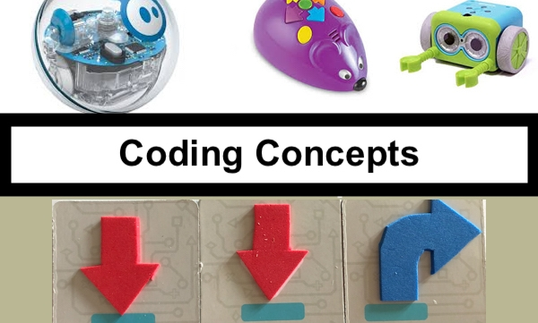

About me
Welcome to Coding Corner For kids website! This site serves as a platform to showcase my journey and projects in the field of Teaching Coding for kids. Here, you will find a collection of my work, including various projects I've completed, resources I've found valuable, and insights I've gained along the way. The primary goal of this site is to focus on how to introduce Coding for kids and how how to teach Coding , share my knowledge, and connect with others who share a passion for coding and technology. Whether you're a fellow developer, a student, or simply curious about Coding, I hope you find the content here both informative and inspiring. Thank you for visiting, and feel free to reach out if you have any questions or would like to collaborate!
.jpg)
At CodeCrafters Academy, we believe that technology and coding are for everyone. Whether you're a curious beginner, a seasoned programmer, or someone looking to stay updated with the latest tech trends, our blog is your go-to resource. Explore a vast array of tutorials, guides, and resources designed to make coding and technology accessible to all ages. From simple coding basics for kids to advanced programming techniques for professionals, we cover it all. Stay ahead of the curve with our in depth articles on the latest in tech, from innovative software to cutting-edge gadgets

we believe that every child should have the opportunity to learn computer science and Coding
Why Kids Should Learn coding?
Students who learn to code are motivated to break down complex problems into smaller issues. Learning how to code, provides children with a basic understanding of algorithmic thinking patterns, from a very tender age. And this eventually gets translated into mathematical pursuits, helping them in improving their computational skills Research report by a team of UC Berkeley psychologists recommends that creativity tends to reduce as we age. Question remains, how do we preserve a child’s creative skills as they age then? This is exactly why should kids learn to code. More and more practice leads to not only a creative mindset but also an experimental discipline In a programming context, kids being coders are continuously challenged and asked to problem-solve. And the more they practice, the more they get an opportunity to hone their skills. They receive the problem, break down the same into sub-problems, and proceed with an iterative process of finding out solutions.
What is Coding ?
Coding is a process of writing instructions for creating computer software, websites, and apps. Surprisingly, kindergarteners can understand basic coding concepts and can develop skills that come in hand Coding for kids is the set of instructions we create to communicate with
Coding for kids: Reasons kids should start coding & how they can find success
Coding for kids refers to the opportunities available for children to get involved in coding. These opportunities aim to be fun and gamified to keep kids' young minds engaged. You might also hear coding referred to as "programming," or "computer programming."
Projects
Here are some of my projects:
Unplugged Coding Activities | The Ultimate Guide for Elementary and for pre schoolers

How can this coding activity support computational thinking? Use this fun coding activity to teach students about algorithms and computational thinking! Computer-free activities such as this 'Little Red Hen Unplugged Coding Activity' will help students to think about giving instructions in the form of directions on a grid. These activity sheets, best suited to students in Years 1-4, allow them to think about how to get from one place to another, using the language forward, backward, turn left and turn right.
Develop and Enhance Coding skills through maze-based programming challenges.
Download Unplugged Coding activity for pre schoolers
Click hereDownload Coloring the directions - Coding activity for pre schoolers
Click here
Coding Activity for kids
Your Ultimate Guide for Elementary Unplugged Coding Activities includes 20+ projects that teach real coding concepts while emphasizing computer science mindsets - all with minimal prep and zero tech devices required. How can you teach coding without computers? The key is to provide hands-on, engaging learning experiences that encourage children to think like a coder. This means projects that foster resilience, critical thinking, logical reasoning, and creative
Download Unplugged Coding activity
Click here
Perfect for when you need a ready-to-go mini-lesson! These unplugged coding activities worksheets
Click hereRECOMMENDED: K-1ST GRADE
Perfect for when you need a ready-to-go mini-lesson! These unplugged coding activities worksheets
Click hereRECOMMENDED: 2ND-3RD GRADE

Perfect for when you need a ready-to-go mini-lesson! These unplugged coding activities worksheets
Click hereRECOMMENDED: 4TH-5TH GRADE
Matatalab Unplugged coding Activity
Course 1: Matatalab Lite helps educators learn how to use Matatalab Lite package and apply its related curriculum in their own classroom. Additionally, educators can also learn how to use activities and create their own. In the final lesson, educators will need to finish a final quiz to get the certificate of finishing this course. Details will be provided in the lessons' page.

Resources
Contact
You can contact me at Click here.